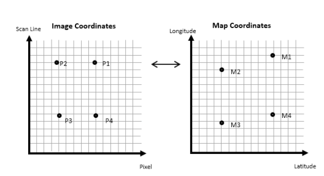
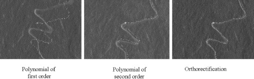

5 week_3
5.1 Summary
5.1.1 Introduction
In this section we learned how to deal with the mistakes and unclearities in the remote sensed images. Sometimes there are lots of biases and flaws like in UK the atmosphere is always a problem in reading all the photos.
5.1.2 Why we need Data Fusion
Data fusion in remote sensing refers to the practice of merging data, signals, or observations from various sources to produce an outcome that is better than what could have been obtained from any single source individually (Schmitt and Zhu 2016).
It can enhance information content: different sensors capture different types of information on earth’s surface. By combining data, it can provide a more complete picture of environmental phenomena such as land cover, vegetation health, or atmospheric conditions.
5.1.3 Data correction
We mainly introduce 4 types of data correction here
5.1.3.1 Geometric correction
Geometric correction is the process of correcting the image geometry to ensure that it accurately represents the earth’s surface as if the image were captured from directly overhead. This correction is necessary when the image is to be compared with other images or existing maps (Dave, Joshi, and Srivastava 2015).
We take the coordinates and model them to give geometric transformation coefficients. Ground Control Points (GCPs) are identified and matched with known points on local maps, other images, or GPS data to model geometric transformation coefficients. The process involves linear regression to align distorted coordinates, aiming to minimize the Root Mean Square Error (RMSE), which Jensen suggesting a value of 0.5. Resampling the final raster image involves methods like Nearest Neighbor, Linear, Cubic, and Cubic spline to ensure data accuracy and alignment.
 Figure from (Dave, Joshi, and Srivastava 2015)
Showing that align one image with another so that the same geographical area is accurately superimposed on both.
5.1.3.2 Atmospheric correction
Atmospheric correction is used to counteract atmospheric scattering and topographic attenuation. It is necessary for biophysical parameters analysis. Correction methods include relative approaches and absolute approaches. Relative atmospheric correction normalizes pixel values within images based on reference points, used to reduce atmospheric effects like haze. Absolute correction converts observed data to physical quantities like surface reflectance using atmospheric models, ensuring comparability across images and time. Methods like Dark Object Subtraction (DOS) and Pseudo-Invariant Features (PIFs) are typical in relative correction, while absolute approaches use models like MODTRAN and tools like FLAASH for precise corrections.
5.1.3.3 Empirical Line Correction
\[ Reflectance (field spectrum) = \frac{gain}{radiance (input data)}\]
Empirical Methods: Include simple Dark Object Subtraction (DS) and the more complex FLAASH correction, optimizing images by simulating atmospheric scattering and absorption.
Absolute Correction: Transforms digital brightness values into scaled surface reflectance, requiring atmospheric models and local condition data for accurate earth surface representation.
Empirical Line Correction: Directly corrects images through field spectrometer measurements taken concurrently with satellite overpasses, enhancing the accuracy of reflectance data.
5.1.3.4 Orthorectification correction
Orthorectification is a subset of georectification, focusing on removing distortions to make pixels appear as viewed from nadir. Requires understanding sensor geometry and an elevation model to correct image distortions.The aim is to make direct and accurate measurements of distances, angles, positions, and areas (Satellite Imaging Corporation 2022).
5.2 Joining data
Remote sensing data is often captured as individual, discrete images, each covering a specific geographical area like pieces of a larger puzzle, to get a comprehensive understanding of larger regions or to analyze spatial relationships and patterns across these areas, we need to merge them together.
Mosaicking in remote sensing is similar to merging in GIS, where multiple datasets are joined to create a seamless image, by blends the edges of images, minimizing the visibility of seamlines between joined images. A base image and a second image are overlapped (20-30%) to ensure continuity. Histogram matching algorithms are used within the overlap area to align brightness values, aiding in seamless integration before feathering.
5.3 Enhancements of remote sensing imagery (NDVI)
The Normalized Difference Vegetation Index (NDVI) leverages the near-infrared and red spectral bands to identify healthy vegetation, as such vegetation strongly reflects near-infrared light and absorbs most of the red light. Regions that exhibit a high NDVI value are indicative of robust vegetation health. The NDVI metric is derived using the following calculation:
\[ NDVI = \frac{NIR - Red}{NIR + Red}\]
5.4 Application
5.4.1 Application 1
I am interested in atmospheric correction as it is useful especially in cloudy areas like the UK. The Land Surface Reflectance Code (LaSRC), created by Eric Vermote at NASA/GSFC and adapted by the USGS, is used for atmospheric correction on data from Landsat 8 and Sentinel-2 sensors. LaSRC used the 6SV radiative transfer model and a MODIS-derived ratio to determine surface reflectance. Its accuracy is verified through the CEOS Atmospheric Correction Inter-Comparison Exercises. Additionally, the Fmask algorithm identifies clouds, shadows, snow/ice, and water in the top-of-atmosphere (TOA) data. HLS enhances this by expanding cloud/shadow areas and incorporating LaSRC aerosol data into the Fmask results, aiding in precise environmental monitoring and analysis.
 Figure from (Sentinel-2 2023)
Figure from (Sentinel-2 2023)
The figure shows a comparison of two satellite images from Sentinel-2B. On the left, there is a true color composite image using bands 4-3-2 with top-of-atmosphere (TOA) reflectance, which has not been corrected for atmospheric effects and therefore may include atmosphere distortions. On the right, there is an image processed with the Land Surface Reflectance Code (LaSRC) to correct for these atmospheric distortions, resulting in surface reflectance that more accurately represents the actual colors and features of the earth’s surface.
5.4.2 Application 2
 Figure from (Rocchini and Di Rita 2005)
The image shows three different rectified versions of an area on the Etna volcanic terrain, each processed with a different method. From left to right, the first image has been rectified using a first-order polynomial, the second image with a second-order polynomial, and the third image using orthorectification.
First-order polynomial rectification is a linear correction that adjusts for image displacements in the x and y directions. It’s a simple model that assumes the earth is flat and only corrects for basic image shift and rotation.
Second-order polynomial rectification includes terms for quadratic distortions, allowing it to handle slight curvature and more complex distortions than the first-order method. However, it still may not be sufficient for highly irregular terrain, as it does not use a full terrain model.
Orthorectification is a more advanced technique to correct images for the effects of sensor perspective and terrain relief. It’s particularly important in areas with significant topographic variation, such as Etna’s volcanic terrain (the study area). This process provides the most accurate location of features on the ground because it compensates for the actual surface geometry.
The study results demonstrated that polynomial functions are sufficient for flat areas but become less accurate with more complex terrains. In contrast, orthorectification consistently produced accurate results across different terrain types.
5.4.3 Application reflection
Atmospheric correction, particularly through LaSRC, requires accurate atmospheric inputs. I’ve also understood that geometric correction isn’t one-size-fits-all, while polynomial methods may be a proper method for uniform terrains, orthorectification is very useful for complex and rugged landscapes. This knowledge highlights the need for distinguish correction techniques, use them in the appropriate landscape’s characteristics and the atmospheric conditions.
6 Reflection
Reflecting on my journey as a new student in remote sensing, I’ve learned the complex of data fusion and correction.
Data fusion and correction in remote sensing are essential for accurate earth observation. Data fusion integrates information from multiple sources, providing a more comprehensive and detailed view of the environment, enhancing the analysis of land cover, vegetation health, and other phenomena. These processes improve the reliability and accuracy of remote sensing data, essential for environmental monitoring, disaster management, and various scientific research applications.
Geometric correction was another thing that I’m interested. Learning about the process, from identifying Ground Control Points (GCPs) to applying transformation algorithms to correct distortions, was like complete a puzzle, once done, the true earth surface just appear.
In conclusion, my interest into remote sensing has increased. The blend of technical knowledge, practical application, and the key role of choosing the right correction method has enriched my understanding.